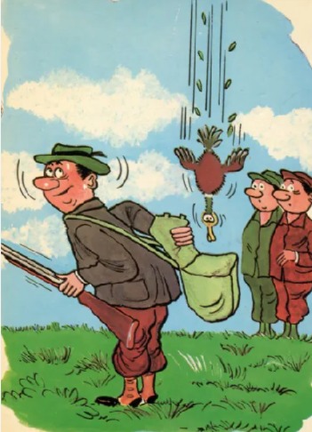

3 Lov lovili građani
Messieurs les chasseurs
(Deveta Rukovet - 9ème guirlande :01:58,5 - 02:28 )
|
 |
|
|
|

 Version Mokranjac |
NOTES
| [1] Nisam našao ni jednu novu verziju ove pesme | [1] Je n'ai pas trouvé de versions modernes de ce chant. |